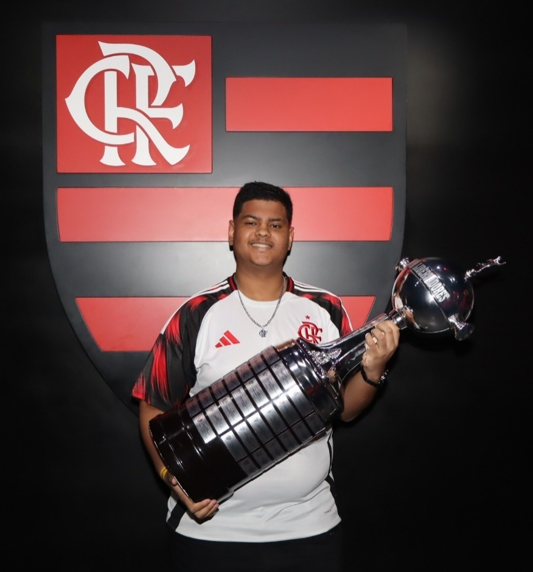

Olá, me chamo Marcus Cevolela!
Eu sou uma pessoa que gosta bastante de aprender, mas também de curtir as coisas que eu gosto no dia a dia. Acho importante ter esse equilíbrio entre estudo e lazer, e isso aparece bastante na minha rotina
Eu sou apaixonado por futebol, é o esporte que eu mais gosto mesmo. Sou flamenguista e acompanho sempre que posso, seja assistindo aos jogos ou comentando com outras pessoas. Não é só torcer, eu gosto de prestar atenção nas jogadas, entender o que o time tá fazendo em campo e tentar analisar o jogo de um jeito mais completo. Além do futebol, eu também gosto de vôlei, principalmente por ser um esporte que depende muito de trabalho em equipe e comunicação.
Outra coisa que faz bastante parte da minha vida é a tecnologia. Hoje eu faço faculdade de Ciência da Computação pela UVA e estou sempre tentando aprender mais sobre programação e como os sistemas funcionam. Antes disso, eu já tinha feito faculdade pelo CEDERJ, que era vinculada à UFF, no curso de Sistemas de Computação, então já venho nessa caminhada de estudar na área há um tempo.
Antes da faculdade, eu fiz o ensino médio no SESI/SENAI, junto com o curso técnico em Automação Industrial. Essa experiência foi muito importante pra mim, porque foi ali que eu comecei a ter mais contato com tecnologia e entender melhor como as coisas funcionam na prática.
Também curto bastante o mundo geek. Eu gosto muito dos filmes da Marvel, principalmente por toda a história e os personagens. Um dos meus favoritos é o Homem-Aranha, que eu acho um personagem muito maneiro. Além disso, eu também gosto de Pokémon, que fez parte da minha infância e continua sendo algo que eu curto até hoje.
Eu também gosto muito de coisas que envolvem raciocínio lógico. Sempre achei interessante esse tipo dedesafio, de parar, pensar e tentar resolver.
Atualmente, eu trabalho como atendente de farmácia, então acabo lidando com o público todos os dias. Isso me ajudou bastante a desenvolver responsabilidade, comunicação e organização. Ao mesmo tempo, eu estou em busca de um estágio na área de tecnologia, pra conseguir entrar de vez na área e começar a ganhar experiência.
No geral, eu diria que sou uma pessoa que gosta de evoluir, tanto nos estudos quanto na vida pessoal. Tudo isso que eu curto (esporte, tecnologia, mundo geek e lógica) faz parte de quem eu sou hoje e também do que eu quero pro meu futuro.